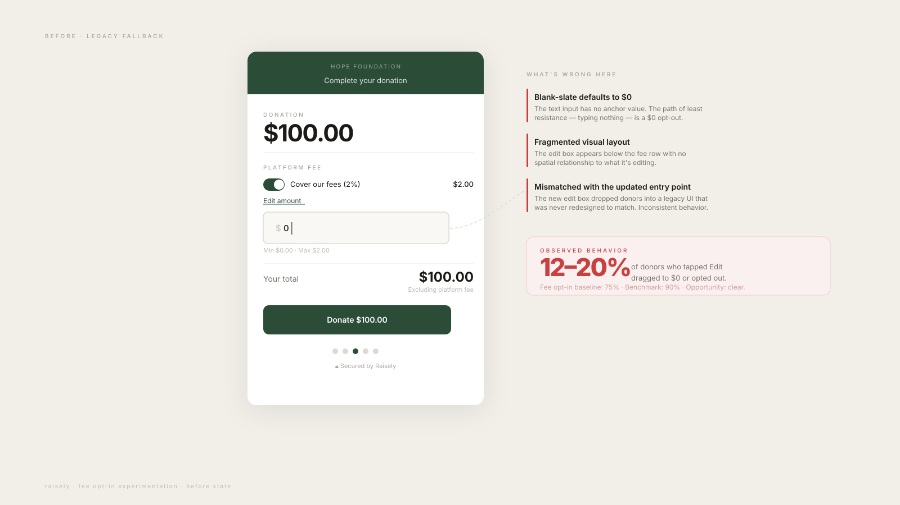
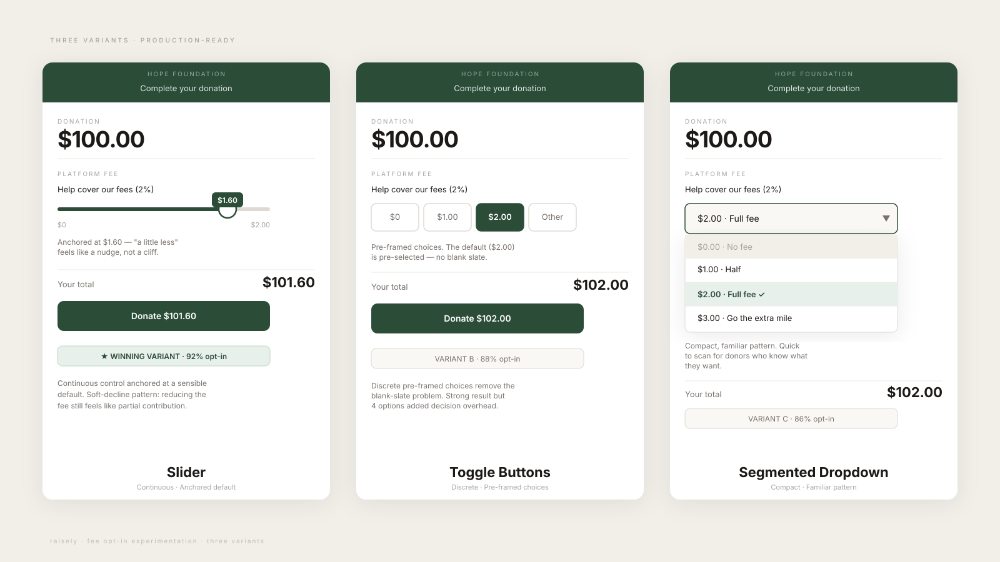
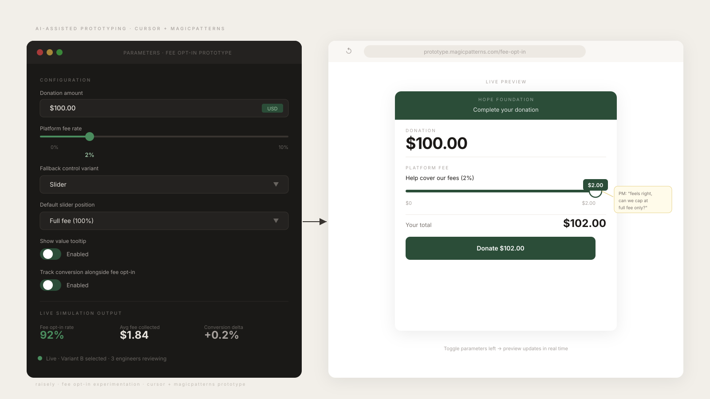
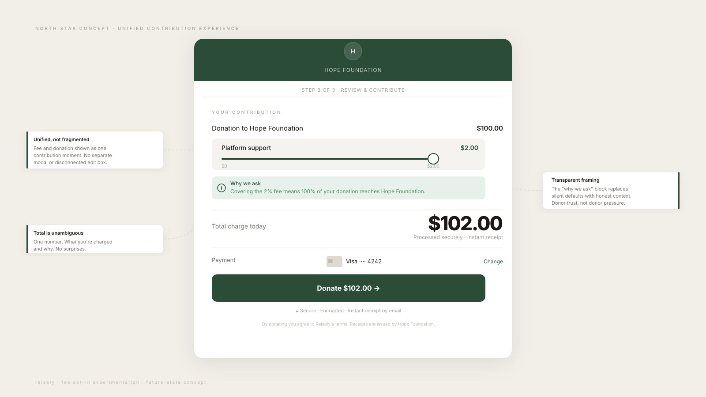
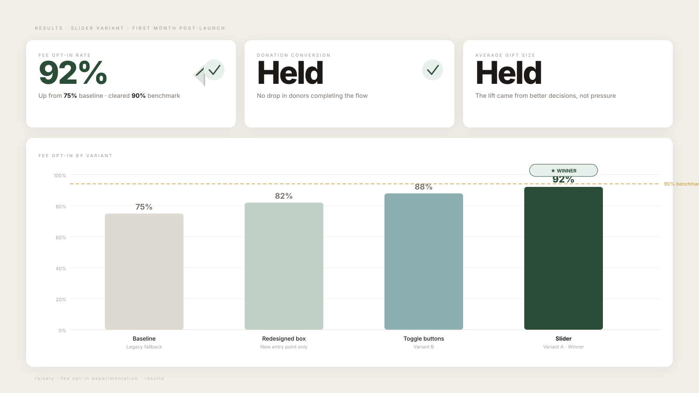
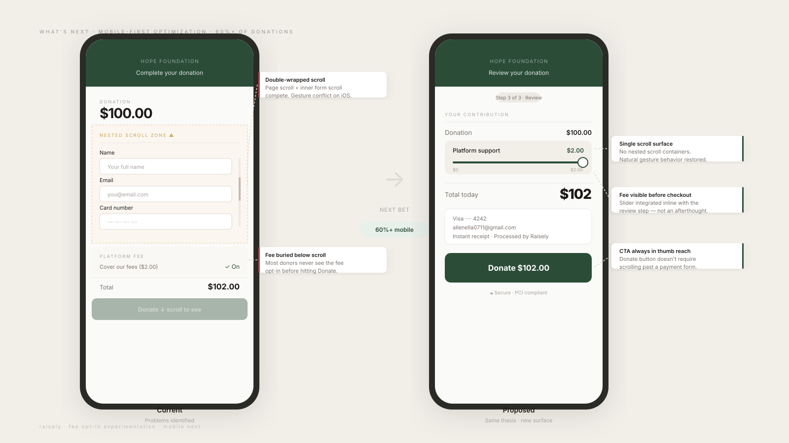

Experimentation
Fee Opt-In: Winning the Moment Donors Change Their Mind
A behavioral A/B test on Raisely's donation flow. The default was already working. The real opportunity was redesigning what happens the moment a donor decides to edit it. The winning variant moved fee opt-in from 75% to 92%.

The product visuals here are intentionally blurred. This work is confidential. The aggregate results are shown as reported, and I’m glad to walk through the real screens in conversation.
The Deceptive Win
Raisely lets nonprofits cover the platform fee at checkout, and a redesigned edit box had just moved fee opt-in from 75% to 82%, a clear win on paper, close to the 90% benchmark set by platforms like Funraise and Givebutter.
But the headline number hid the actual problem. When I looked at the 12–20% of donors who clicked "Edit" on the fee, a pattern jumped out: once they entered the edit flow, they overwhelmingly dragged the amount to the lowest possible value or opted out entirely.
The opportunity wasn't increasing awareness of the fee. Awareness was fine. The opportunity was decision design: what happens in the few seconds after a donor has already signalled they want to change something.
Reframing the Problem
The conventional move here would be to ship the 82% and move on. Instead, I argued we should pause the rollout. The new edit box and the legacy fallback UI it dropped donors into were visually fragmented and behaved inconsistently. Worse, the fallback unintentionally nudged donors toward the smallest contribution. We'd have been optimizing the front door while leaving a leak in the back.
So I reframed the brief from "raise opt-in" to a sharper question: how do we design the moment a donor edits their decision so the easiest path is also a fair one, without ever feeling coercive? Donor trust is the entire product here. A few extra points of fee revenue isn't worth a flow that feels manipulative.

Designing the Decision, Not the Default
The experiment centered on the fallback control itself. I designed three variants grounded in established behavioral patterns (defaults, anchoring, and soft-decline) rather than guessing:
- Slider: a continuous control anchored at a sensible default, making "a little less" feel like a small nudge rather than a cliff to zero.
- Toggle buttons: discrete, pre-framed choices that removed the blank-slate problem of a free-entry field.
- Segmented dropdown: a compact, familiar pattern for donors who wanted to pick quickly and move on.
Each was treated as production-ready, not disposable test UI. The winner had to scale across the whole platform the day the test closed.

Prototyping With AI
To move fast without sacrificing rigor (and frankly, to push my own craft) I introduced AI-assisted prototyping into the exploration phase. Using Cursor and MagicPatterns, I built interactive, control-panel-style prototypes instead of static mocks. PMs and engineers could:
- simulate donation thresholds and live fee calculations
- toggle default states and fallback logic
- preview behavioral outcomes across variants
- reason about feasibility through inspectable logic, not my assertions about it
This collapsed alignment time and surfaced technical constraints before we committed to high-fidelity design. Final specs and handoff happened in Figma.

I also built a future-state concept prototype to show how the fallback could eventually evolve into a single, unified contribution experience, giving the team a direction beyond the immediate test.

The Hypothesis
Introducing a modernized fallback control when a donor clicks "Edit" will increase the average fee opt-in value while maintaining or improving the existing conversion rate.
Grounded in internal behavioral data, competitive analysis, and the anchoring and soft-decline literature, not a hunch.
What Happened
- The winning Slider variant lifted fee opt-in from 75% to 92%, clearing the 90% benchmark
- Donation conversion and average gift size held steady: the lift came from better decisions, not pressure
- The validated pattern shipped as the platform-wide fallback, scaling beyond the single test surface

The result validated the core insight I'd been chasing:
Improving how a user changes their decision can be just as effective as improving the default itself.
What's Next
I'm now extending the same principle to mobile, where 60%+ of donations happen but the experience suffers from double-wrapped scroll containers, a broken gesture hierarchy, and reduced clarity at the critical fee-and-total review. The next bet is reducing mobile drop-off by simplifying scroll behavior and re-sequencing how the decisive information is surfaced on a small screen.

Same thesis, new surface: design the decision moments intentionally, not incidentally.